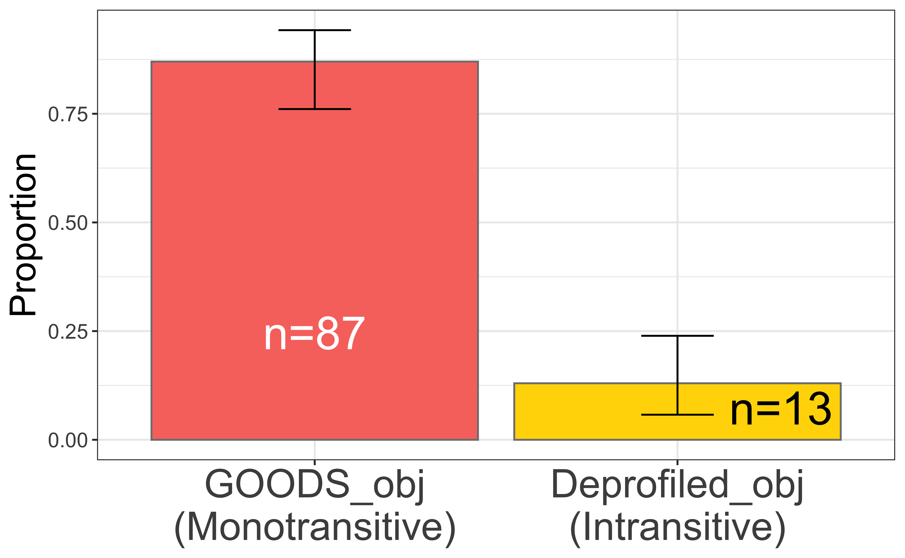
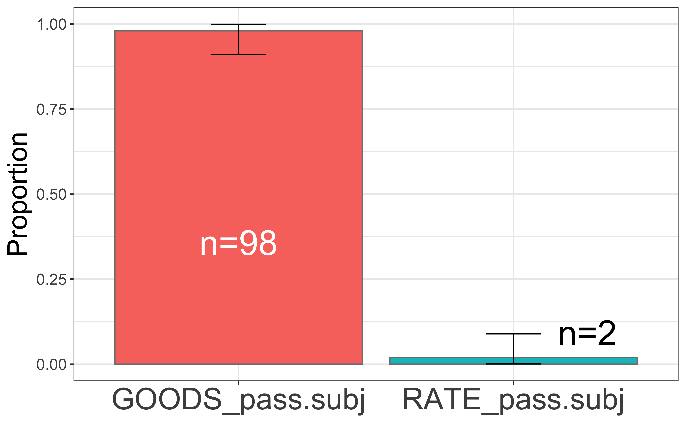
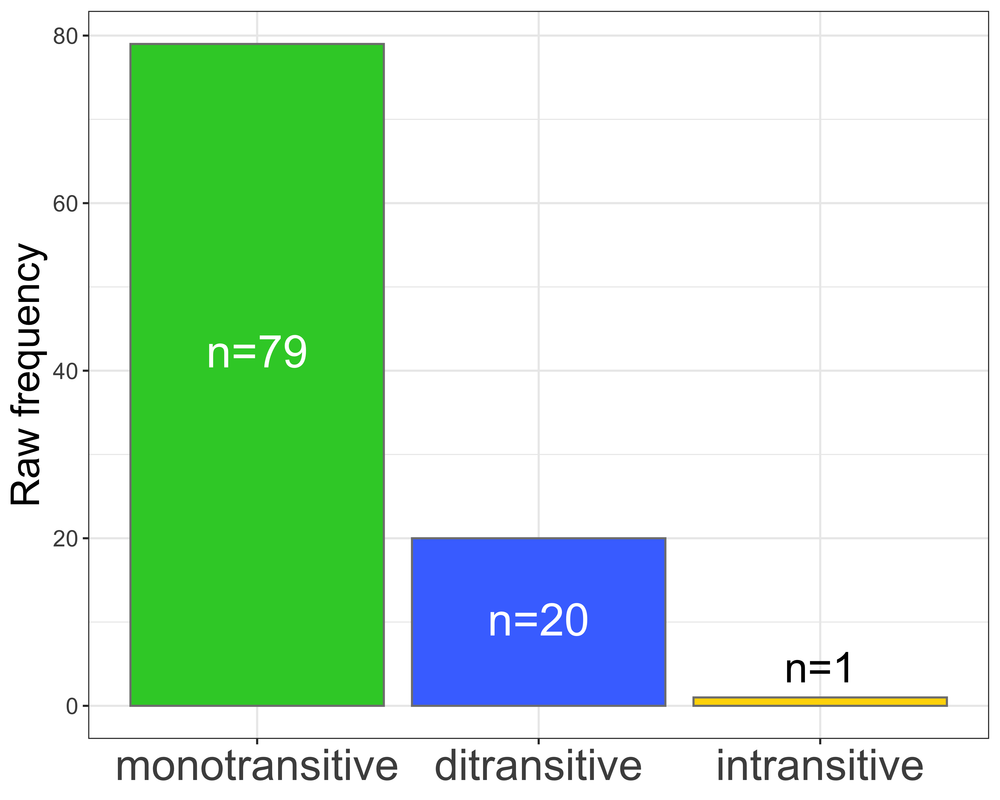
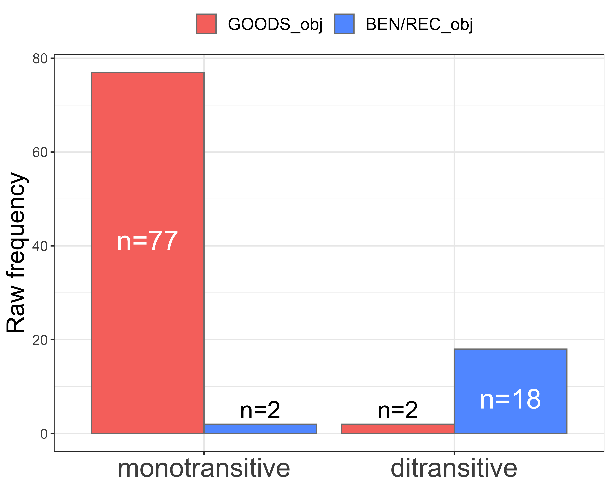
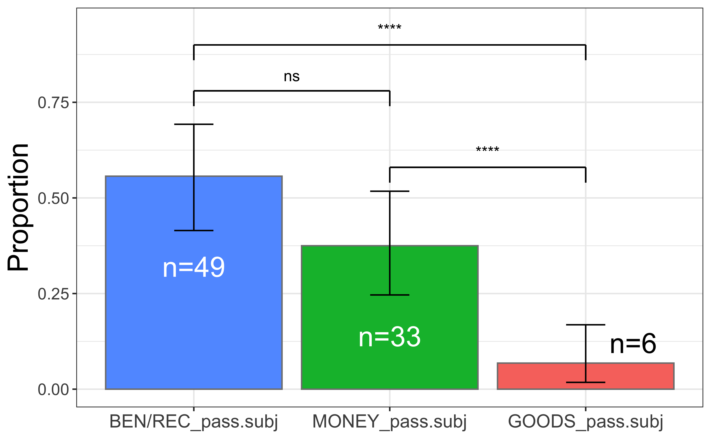

![]()
Code
# load packages =====
library(tidyverse)
library(readxl)
library(vcd)
library(EMT)
library(knitr)
library(ggpubr)
library(rstatix)# load packages =====
library(tidyverse)
library(readxl)
library(vcd)
library(EMT)
library(knitr)
library(ggpubr)
library(rstatix)Below is the code to load the corpus size table.
# load the corpus size table
# corpussize <- tibble::as_tibble(read.table(file = "/Volumes/GoogleDrive/Other computers/My MacBook Pro/Documents/Corpora/_corpusindo/Leipzig Corpora/corpus_total_size_per_file.txt", header = TRUE, sep = "\t", comment.char = "", quote = "")[-c(1, 13, 15), ])
# readr::write_tsv(corpussize, "data/corpussize.txt")
corpussize <- readr::read_tsv("data/corpussize.txt")The total size (in word-tokens) for the corpus is 119,557,093 tokens.
Below is the code to read-in the spreadsheet containing the annotated concordance data for beli (membeli, membelikan, dibeli, and dibelikan).
# mydat <- read_xlsx("data/BELI-main.xlsx")
mydat <- read_csv2("data/BELI-main.csv")
df_membelikan <- mydat %>%
filter(node == "membelikan")
df_membeli <- mydat %>%
filter(node == "membeli")
df_dibeli <- mydat %>%
filter(node == "dibeli")
df_dibelikan <- mydat %>%
filter(node == "dibelikan")
mydat_clause_type <- mydat |>
count(clause_type, sort = TRUE) |>
mutate(perc = n/sum(n) * 100,
perc = round(perc, 1))
mydat_clause_type_binom <- binom.test(mydat_clause_type$n)
# Exact binomial test
#
# data: mydat_clause_type$n
# number of successes = 254, number of trials = 400, p-value = 7.382e-08
# alternative hypothesis: true probability of success is not equal to 0.5
# 95 percent confidence interval:
# 0.5857092 0.6822768
# sample estimates:
# probability of success
# 0.635The sample comprises of 254 tokens (63.5%) of subordinate clauses and 146 tokens (36.5%) of main clauses (pBinomial < 0.0001).
Below is the code to count the construction types and syntactic valence/transitivity for membeli (Table 1).
cxn_type_membeli <- df_membeli %>%
mutate(schema = replace(schema,
schema == "theme_obj_cxn",
"[Goods]{.smallcaps}_Obj Construction"),
schema = replace(schema,
schema == "intransitive",
"Intransitive Construction")) %>%
count(schema, syntactic_transitivity) %>%
arrange(desc(n))
cxn_type_membeli %>%
rename(`syntactic transitivity` = syntactic_transitivity,
`token freq.` = n) %>%
kable(caption = "Construction types/schemas and syntactic valence/transitivity for *membeli*")| schema | syntactic transitivity | token freq. |
|---|---|---|
| Goods_Obj Construction | monotransitive | 87 |
| Intransitive Construction | intransitive | 13 |
Below is the code to run the Proportion Test (Gries 2013: 135) for the schema and syntactic transitivity frequency.
cxn_type_membeli <- cxn_type_membeli %>%
# create factor for plotting.
mutate(syntactic_transitivity = factor(syntactic_transitivity,
levels = c("monotransitive",
"intransitive")),
N = sum(n),
expected = N/nrow(.),
alternatives = if_else(n < expected, "less", "greater"),
# run binomial test
binomtest = pmap(list(x = n, n = N), binom.test, conf.level = 0.99),
# extract confidence interval
conf_low = map_dbl(binomtest, list("conf.int", 1)),
conf_high = map_dbl(binomtest, list("conf.int", 2)),
# extract the estimate
estimate = map_dbl(binomtest, "estimate"),
# extract p-value
pval = map_dbl(binomtest, "p.value"),
signifs = "ns",
signifs = if_else(pval < 0.05, "*", signifs),
signifs = if_else(pval < 0.01, "**", signifs),
signifs = if_else(pval < 0.001, "***", signifs)
)
cxn_type_membeli %>%
select(-binomtest, -N, -alternatives, -expected) %>%
mutate(conf_low = round(conf_low, 2),
conf_high = round(conf_high, 2),
estimate = round(estimate, 2),
pval = format(pval, digits = 4, scientific = TRUE)) %>%
kable()| schema | syntactic_transitivity | n | conf_low | conf_high | estimate | pval | signifs |
|---|---|---|---|---|---|---|---|
| Goods_Obj Construction | monotransitive | 87 | 0.76 | 0.94 | 0.87 | 1.313e-14 | *** |
| Intransitive Construction | intransitive | 13 | 0.06 | 0.24 | 0.13 | 1.313e-14 | *** |
# get the base, "red" ggplot2 colour using `scales` package
ggred <- scales::hue_pal()(2)[1]
cxn_type_membeli %>%
# edit factor for plotting.
mutate(schema = replace(schema, str_detect(schema, "Goods"), "GOODS_obj\n(Monotransitive)"),
schema = replace(schema, str_detect(schema, "Intran"), "Deprofiled_obj\n(Intransitive)"),
schema = factor(schema, levels = c("GOODS_obj\n(Monotransitive)", "Deprofiled_obj\n(Intransitive)"))) %>%
ggplot(aes(x = schema,
y = estimate,
fill = syntactic_transitivity)) +
geom_col(position = position_dodge(.9), colour = "gray50") +
geom_text(aes(label = paste("n=", n, sep = "")),
position = position_dodge(.9),
vjust = c(8.75, 1.25),
hjust = c(0.5, -.5),
colour = c("white", "black"),
size = 9) +
theme_bw() +
scale_fill_manual(values = c(ggred, "gold")) +
labs(y = "Proportion",
fill = NULL,
x = NULL) +
theme(legend.position = "none",
axis.title.y = element_text(size = 20),
axis.text.y = element_text(size = 11.5),
axis.text.x = element_text(size = 22)) +
geom_errorbar(aes(ymin = conf_low, ymax = conf_high),
width = .2, position = position_dodge(.9))
The results in Table 2 and Figure 1 show that the Monotransitive, Goods-as-object construction is unsurprisingly and highly significantly the predominant argument realisation pattern for the base membeli.
The code below shows the count for the distribution of the intransitive membeli in main vs subordinate clauses (question raised by Reviewer A).
intransitive_membeli_clause_type <- df_membeli |>
filter(schema == "intransitive") |>
count(clause_type, sort = TRUE) |>
mutate(percentage = n/sum(n) * 100)
intransitive_membeli_clause_type_binom <- binom.test(intransitive_membeli_clause_type$n)
intransitive_membeli_clause_type_binom_pval <- intransitive_membeli_clause_type_binom$p.value
intransitive_membeli_clause_type# A tibble: 2 × 3
clause_type n percentage
<chr> <int> <dbl>
1 subordinate 11 84.6
2 main 2 15.4The intransitive membeli is significantly more frequent in the subordinate clause (N=11) than in the main clause (N=2) (pBinomial < 0.05).
The following code presents count of membeli’s subordinate clause types.
df_membeli |>
filter(syntactic_transitivity=='intransitive', clause_type == "subordinate") |>
count(subordinate_clause_type)# A tibble: 3 × 2
subordinate_clause_type n
<chr> <int>
1 adverbial 6
2 complement_clause 4
3 relative_clause 1The following code extract the occurrences of intransitive membeli in main clauses of compound sentences.
df_membeli |>
filter(syntactic_transitivity=='intransitive', clause_type == "main") |>
pull(node_sentences)[1] "4. Tarmizi on 2 Agustus 2009 Kami dari toko buku Azhar dari Malaysia ingin tahu adakah buku Kiamat 2012 sudah tersedia dan bulan Agustus tanggal berapa akan di launching buku tersebut dan kami ingin<m>membeli</m>in bulk."
[2] "\"Mereka bilang pasar produk ini captive-market, konsumen tidak hanya<m>membeli</m>tapi juga menikmatinya,\" ujar Hidayat." df_membeli |>
filter(syntactic_transitivity=='intransitive', clause_type == "subordinate") |>
pull(node_sentences) [1] "Ia menambahkan, pemerintah, melalui Badan Perencanaan Pembangunan Nasional (Bappenas) dan Kementerian Keuangan, harus menggodoknya terlebih dulu, baru kemudian mengambil keputusan untuk<m>membeli</m>atau tidak."
[2] "Ketika<m>membeli</m>Barclays berkomitmen tak akan menggadaikan Bank Akita selama lima tahun."
[3] "Ini artinya ketiganya harus<m>membeli</m>dengan proporsi yang berimbang yaitu masing-masing Rp752 miliar."
[4] "Ada juga cara lain dengan<m>membeli</m>di tempat penjualan tak resmi."
[5] "Sedangkan penerima ginjal atau yang<m>membeli</m>diminta bayaran sebesar Rp250 juta hingga Rp300 juta."
[6] "! jika anda memesan atau<m>membeli</m>jangan lupa untuk mencantumkan NGG dikarenakan NGG merupakan kode pemesanan yang wajib di cantumkan pada setiap pemesanan dan apabila tidak mencantumkan maka kami anggap tidak ada pemesanan."
[7] "Selain dengan modus itu, kalau ada orang yang mau<m>membeli</m>juga dilayani."
[8] "Ny Suhartinah (45) warga Kecamatan Cibadak, Kabupaten Lebak, mengatakan hingga kini sulit mendapatkan minyak tanah di wilayahya sehingga ia terpaksa<m>membeli</m>ke pangkalan di Jalan Pasar Baru Rangkasbitung."
[9] "Menurut dia, kondisi ini banyak dimanfaatkan atau mendorong pelaku bisnis yang mengadalkan bahan baku impor akan<m>membeli</m>lebih banyak, karena harga dolar lagi murah."
[10] "Ini karena kemampuan masyarakat untuk<m>membeli</m>pun terbatas."
[11] "Sudah ada beberapa investor yang tertarik untuk<m>membeli</m>tetapi kami belum tentukan siapanya." Sentences [5], [8] and [9] include reference of the omitted object in the previous, higher clauses (ginjal ‘kidney’ for [5], minyak tanah ‘kerosine’ for [8], and bahan baku impor ‘import basic materials’ in [9]).
cxn_type_dibeli <- df_dibeli %>%
filter(schema != "???") %>%
count(schema, syntactic_transitivity) %>%
arrange(desc(n))cxn_type_dibeli2 <- df_dibeli %>%
filter(schema != "???") %>%
count(schema) %>%
arrange(desc(n)) %>%
mutate(schema = str_replace(schema, "theme", "goods"),
schema = replace(schema, schema == "subj_goods", "GOODS_pass.subj"),
schema = replace(schema, schema == "subj_rate", "RATE_pass.subj"),
schema = factor(schema, levels = c("GOODS_pass.subj", "RATE_pass.subj")),
N = sum(n),
# run binomial test
binomtest = pmap(list(x = n, n = N), binom.test, conf.level = 0.99),
# extract confidence interval
conf_low = map_dbl(binomtest, list("conf.int", 1)),
conf_high = map_dbl(binomtest, list("conf.int", 2)),
# extract the estimate
estimate = map_dbl(binomtest, "estimate"),
# extract the p-value
pval = map_dbl(binomtest, "p.value"),
signifs = "ns",
signifs = if_else(pval < 0.05, "*", signifs),
signifs = if_else(pval < 0.01, "**", signifs),
signifs = if_else(pval < 0.001, "***", signifs))cxn_type_dibeli2 %>%
ggplot(aes(x = schema,
y = estimate,
fill = schema)) +
geom_col(position = position_dodge(.9), colour = "gray50") +
geom_text(aes(label = paste("n=", n, sep = "")),
position = position_dodge(.9),
vjust = c(9, -.5),
hjust = c(.5, -.75),
size = 9,
colour = c("white", "black")) +
theme_bw() +
# scale_fill_manual(values = c("limegreen", "gold")) +
labs(y = "Proportion",
fill = "Cxn Type",
x = NULL) +
theme(axis.text.x = element_text(size = 22),
legend.position = "none",
axis.title.y = element_text(size = 20),
axis.text.y = element_text(size = 11.5)) +
geom_errorbar(aes(ymin = conf_low, ymax = conf_high),
width = .2, position = position_dodge(.9))
cxn_type_membelikan <- df_membelikan %>%
count(schema, syntactic_transitivity) %>%
arrange(syntactic_transitivity, desc(n)) %>%
group_by(syntactic_transitivity) %>%
mutate(n_transitivity = sum(n)) %>%
arrange(desc(n_transitivity), desc(n)) %>%
ungroup()
## retrieve the intransitive singleton for "membelikan"
df_membelikan %>% filter(syntactic_transitivity=='intransitive') %>% pull(node_sentences)[1] "AQSIQ minta kepada orang tua untuk melakukan pemeriksaan terhadap mainan sebelum<m>membelikan</m>kepada anak-anaknya."padjs1 <- 0.05/3
padjs2 <- 0.01/3
padjs3 <- 0.001/3
synt_trans_membelikan <- cxn_type_membelikan %>%
# filter(schema != "intransitive") %>%
mutate(schema = str_replace(schema, "theme", "goods"),
schema = str_replace(schema, "recipient", "recipient/beneficiary"),
schema = replace(schema, schema == "intransitive", "deprofiled_obj"),
schema = str_replace(schema, "_cxn$", ""),
syntactic_transitivity = factor(syntactic_transitivity,
levels = c("monotransitive", "ditransitive", "intransitive")),
schema = factor(schema,
levels = c("goods_obj", "recipient/beneficiary_obj", "deprofiled_obj"))) %>%
group_by(syntactic_transitivity) %>%
summarise(n = sum(n))
synt_trans_membelikan <- synt_trans_membelikan %>%
mutate(N = sum(n),
# run binomial test
binomtest = pmap(list(x = n, n = N), binom.test, conf.level = 0.99),
# extract confidence interval
conf_low = map_dbl(binomtest, list("conf.int", 1)),
conf_high = map_dbl(binomtest, list("conf.int", 2)),
# extract the estimate
estimate = map_dbl(binomtest, "estimate"),
# extract the p-value
pval = map_dbl(binomtest, "p.value"),
signifs = "ns",
signifs = if_else(pval < padjs1, "*", signifs),
signifs = if_else(pval < padjs2, "**", signifs),
signifs = if_else(pval < padjs3, "***", signifs))synt_trans_membelikan_vector <- synt_trans_membelikan$n
names(synt_trans_membelikan_vector) <- synt_trans_membelikan$syntactic_transitivity
synt_trans_membelikan_pairwise_binom <- pairwise_binom_test(synt_trans_membelikan_vector,
p.adjust.method = "bonferroni",
conf.level = 0.99) %>%
mutate(p.adjt = paste(format(p.adj, digits = 4, scientific = TRUE), " (", p.adj.signif, ")", sep = ""))length_valence <- length(synt_trans_membelikan$syntactic_transitivity)
prob_valence <- rep(1/length_valence, length_valence)
pmultinom <- EMT::multinomial.test(observed = synt_trans_membelikan$n, prob = prob_valence)
The model includes 5151 different events.
Exact Multinomial Test
Events pObs p.value
5151 0 0# p-value = 0synt_trans_membelikan %>%
ggplot(aes(x = syntactic_transitivity,
y = n,
fill = syntactic_transitivity)) +
geom_col(position = position_dodge(.9), colour = "gray50") +
geom_text(aes(label = paste("n=", n, sep = "")),
position = position_dodge(.9),
vjust = c(10, 3, -.5),
hjust = c(.5, .5, .5),
size = c(8, 8, 7.5),
colour = c("white", "white", "black")) +
theme_bw() +
scale_fill_manual(values = c("limegreen", "royalblue1", "gold")) +
labs(y = "Raw frequency",
fill = NULL,
x = NULL) +
theme(legend.position = "none",
axis.title.y = element_text(size = 20),
axis.text.y = element_text(size = 11.5),
axis.text.x = element_text(size = 22)) # +
#geom_errorbar(aes(ymin = conf_low, ymax = conf_high),
# width = .2, position = position_dodge(.9)) # +
# ylim(NA, 1) +
# geom_segment(x = 1.3, xend = 2, y = 0.84, yend = 0.84) +
# geom_segment(x = 1.3, xend = 1.3, y = 0.84, yend = 0.82) +
# geom_segment(x = 2, xend = 2, y = 0.84, yend = 0.82) +
# annotate("text",
# x = 1.7, y = 0.88,
# label = pull(filter(synt_trans_membelikan_pairwise_binom, group1 == "monotransitive", group2 == "ditransitive"), p.adjt)) +
#
# geom_segment(x = 1, xend = 3, y = 0.96, yend = 0.96) +
# geom_segment(x = 1, xend = 1, y = 0.96, yend = 0.94) +
# geom_segment(x = 3, xend = 3, y = 0.96, yend = 0.94) +
# annotate("text",
# x = 2, y = 1,
# label = pull(filter(synt_trans_membelikan_pairwise_binom, group1 == "monotransitive", group2 == "intransitive"), p.adjt)) +
#
# geom_segment(x = 2, xend = 3, y = 0.38, yend = 0.38) +
# geom_segment(x = 2, xend = 2, y = 0.38, yend = 0.36) +
# geom_segment(x = 3, xend = 3, y = 0.38, yend = 0.36) +
# annotate("text",
# x = 2.5, y = 0.42,
# label = pull(filter(synt_trans_membelikan_pairwise_binom, group1 == "ditransitive", group2 == "intransitive"), p.adjt))
# get the base, "blue" ggplot2 colour using `scales` package
ggblue <- scales::hue_pal()(3)[3]
### 2.1 data preparation and binomial test for CI =====
cxn_type_synt_trans_membelikan <- cxn_type_membelikan %>%
filter(schema != "intransitive") %>%
mutate(schema = str_replace(schema, "theme", "GOODS"),
schema = str_replace(schema, "recipient", "BEN/REC"),
schema = str_replace(schema, "_cxn$", ""),
syntactic_transitivity = factor(syntactic_transitivity,
levels = c("monotransitive", "ditransitive")),
schema = factor(schema, levels = c("GOODS_obj", "BEN/REC_obj")),
perc_schema = round(n/n_transitivity * 100, 2),
binomtest = pmap(list(x = n, n = n_transitivity),
binom.test, conf.level = 0.99),
conf_low = map_dbl(binomtest, list("conf.int", 1)),
conf_high = map_dbl(binomtest, list("conf.int", 2)),
estimate = map_dbl(binomtest, "estimate"),
pval = map_dbl(binomtest, "p.value")
)
### 2.2 visualisation proper =======
cxn_type_synt_trans_membelikan %>%
ggplot(aes(x = syntactic_transitivity,
y = n,
fill = schema)) +
geom_col(position = position_dodge(.9), colour = "gray50") +
geom_text(aes(label = paste("n=", n, sep = "")),
position = position_dodge(.9),
vjust = c(9, -.35, 3, -.35),
hjust = c(.5, .5, .5, .5),
size = c(8, 7, 8, 7),
colour = c("white", "black", "white", "black")) +
theme_bw() +
scale_fill_manual(values = c(ggred, ggblue, ggblue, ggred, ggblue)) +
labs(y = "Raw frequency",
fill = NULL,
x = NULL) +
# geom_errorbar(aes(ymin = conf_low, ymax = conf_high),
# width = .2, position = position_dodge(.9)) +
theme(axis.text.x = element_text(size = 22),
axis.title.y = element_text(size = 20),
axis.text.y = element_text(size = 11.5),
legend.text = element_text(size = 14),
legend.title = element_text(size = 18),
legend.position = "top")
The applicative membelikan shows similar profile as the base membeli in their predominant monotransitive usage, especially in the GOOD-as-OBJ construction. There is no statistical difference for this construction between membelikan (N=77) and membeli (N=87). The statistical test for this is shown in the code below.
goods_obj_membelikan <- cxn_type_synt_trans_membelikan %>% filter(schema == "GOODS_obj", syntactic_transitivity == "monotransitive") %>% pull(n)
goods_obj_membeli <- cxn_type_membeli %>% slice_max(n = 1, order_by = n) %>% pull(n)
chisq.test(c(goods_obj_membelikan, goods_obj_membeli))
Chi-squared test for given probabilities
data: c(goods_obj_membelikan, goods_obj_membeli)
X-squared = 0.60976, df = 1, p-value = 0.4349membelikan_theme_object_clause_type <- count(filter(df_membelikan, syntactic_transitivity == "monotransitive", schema == "theme_obj_cxn"), schema, clause_type)Moreover, the occurrence of membelikan in the Monotransitive, THEME-Object Construction can be equally likely in the main (N=31) and subordinate (N=46) clauses without (statistically) significant difference (pBinomial=0.11).
coreferentiality_df <- df_membelikan %>%
filter(syntactic_transitivity == "monotransitive",
str_detect(recipient_syntax, "MATRIX"))# 1. data preparation ======
oblique_membelikan_df <- df_membelikan %>%
filter(syntactic_transitivity == "monotransitive") %>%
count(recipient_syntax) %>%
mutate(syntx = if_else(str_detect(recipient_syntax, "^PP"),
"PP",
"others")) %>%
group_by(syntx) %>%
summarise(n=sum(n)) %>%
mutate(perc = n/sum(n) * 100)
oblique_membelikan <- oblique_membelikan_df %>%
filter(syntx == "PP") %>% pull(n)
ditrans_membelikan <- df_membelikan %>%
filter(syntactic_transitivity == "ditransitive") %>%
nrow()
# 2. binomial test
binom.test(c(oblique_membelikan, ditrans_membelikan))
Exact binomial test
data: c(oblique_membelikan, ditrans_membelikan)
number of successes = 25, number of trials = 45, p-value = 0.5515
alternative hypothesis: true probability of success is not equal to 0.5
95 percent confidence interval:
0.3999735 0.7035561
sample estimates:
probability of success
0.5555556 Not a significant distributional difference between the Monotransitive Oblique and the Double Object constructions.
Below is pronominality analysis. No significant difference (perhaps due to small sample) between Oblique vs. Double Object choice in terms of pronominality of the Beneficiary in three-way categories: NP, Pronoun, Proper Name.
benef_pron_mono <- df_membelikan %>%
filter(syntactic_transitivity %in% c("monotransitive"),
str_detect(recipient_syntax, "^PP")) %>%
count(recipient_pronominality) %>%
mutate(cxn = "monotransitive")
benef_pron_doubleobject <- df_membelikan %>%
filter(syntactic_transitivity %in% c("ditransitive")) %>%
count(recipient_pronominality) %>%
mutate(cxn = "ditransitive")
benef_pron <- bind_rows(benef_pron_mono,
benef_pron_doubleobject) %>%
# merge personal-pronoun-suffix with personal-pronoun
mutate(recipient_pronominality = str_replace(recipient_pronominality,
"^personal\\-pronoun(\\-suffix)?$",
"pronoun")) %>%
group_by(cxn, recipient_pronominality) %>%
summarise(n = sum(n), .groups = "drop")
benef_pron_mtx <- benef_pron %>%
pivot_wider(names_from = "recipient_pronominality", values_from = "n") %>%
data.frame(row.names = 1) %>%
as.matrix()
benef_pron_mtx np pronoun proper.name
ditransitive 8 9 3
monotransitive 16 4 5fisher.test(benef_pron_mtx)
Fisher's Exact Test for Count Data
data: benef_pron_mtx
p-value = 0.1035
alternative hypothesis: two.sidedProportion of lexical types of the Beneficiary/Recipient role of ditransitive membelikan are 45% (n=9) pronoun, 40% (n=8) noun phrase referring to animate entity/human, and 15% (n=3) proper name.
Now, trying to merge the categories into Pronoun vs. Non-Pronoun (proper name and NP). The result is also not significant.
benef_pron_merge <- benef_pron %>%
mutate(recipient_pronominality = replace(recipient_pronominality,
recipient_pronominality %in% c("np", "proper-name"),
"non_pronoun")) %>%
group_by(cxn, recipient_pronominality) %>%
summarise(n = sum(n), .groups = "drop")
benef_pron_merge_mtx <- benef_pron_merge %>%
pivot_wider(names_from = "recipient_pronominality", values_from = "n") %>%
data.frame(row.names = 1) %>%
as.matrix()
benef_pron_merge_mtx non_pronoun pronoun
ditransitive 11 9
monotransitive 21 4chisq.test(benef_pron_merge_mtx) # assumption met for exp. frequency
Pearson's Chi-squared test with Yates' continuity correction
data: benef_pron_merge_mtx
X-squared = 3.2465, df = 1, p-value = 0.07157# 1. data preparation ======
benef_anim_monotransitive_oblique <- df_membelikan %>%
filter(syntactic_transitivity %in% c("monotransitive"),
str_detect(recipient_syntax, "^PP")) %>%
count(recipient_animacy) %>%
mutate(cxn = "monotransitive_oblique")
benef_anim_ditransitive <- df_membelikan %>%
filter(syntactic_transitivity %in% c("ditransitive")) %>%
count(recipient_animacy) %>%
mutate(cxn = "ditransitive")
benef_anim_combined <- bind_rows(benef_anim_ditransitive, benef_anim_monotransitive_oblique)
benef_anim_combined_mtx <- benef_anim_combined %>%
pivot_wider(names_from = "recipient_animacy", values_from = "n", values_fill = 0L) %>%
data.frame(row.names = 1) %>%
as.matrix()
benef_anim_combined_mtx animate inanimate
ditransitive 20 0
monotransitive_oblique 24 1# 2. Fisher-Yates Excat Test ======
fisher.test(benef_anim_combined_mtx)
Fisher's Exact Test for Count Data
data: benef_anim_combined_mtx
p-value = 1
alternative hypothesis: true odds ratio is not equal to 1
95 percent confidence interval:
0.02052812 Inf
sample estimates:
odds ratio
Inf The distribution of Oblique vs. Double Object pattern regarding the Animacy of the Beneficiary is also not significantly different.
df_dibelikan1 <- df_dibelikan %>%
filter(str_detect(schema, "^null_", negate = TRUE)) %>%
mutate(schema = str_replace(schema, "recipient", "BEN/REC"),
schema = str_replace(schema, "theme", "GOODS"),
schema = str_replace(schema, "money", toupper("money")),
schema = str_replace_all(schema, "^([^_]+)_([^_]+)$", "\\2_pass.\\1"),
schema = factor(schema,
levels = c("GOODS_pass.subj",
"MONEY_pass.subj",
"BEN/REC_pass.subj")))
cxn_type_dibelikan <- df_dibelikan1 %>%
count(schema) %>%
mutate(prop = n/sum(n), prop = round(prop, 2),
N = sum(n))padjs1 <- 0.05/3
padjs2 <- 0.01/3
padjs3 <- 0.001/3
cxn_type_dibelikan1 <- cxn_type_dibelikan %>%
# run binomial test
mutate(binomtest = pmap(list(x = n, n = N), binom.test, conf.level = 0.99),
# extract confidence interval
conf_low = map_dbl(binomtest, list("conf.int", 1)),
conf_high = map_dbl(binomtest, list("conf.int", 2)),
# extract the estimate
estimate = map_dbl(binomtest, "estimate"),
pval = map_dbl(binomtest, "p.value"),
# p-value
signifs = "ns",
signifs = if_else(pval < padjs1, "*", signifs),
signifs = if_else(pval < padjs2, "**", signifs),
signifs = if_else(pval < padjs3, "***", signifs))
## pairwise binom
cxn_type_dibelikan_vector <- cxn_type_dibelikan$n
names(cxn_type_dibelikan_vector) <- cxn_type_dibelikan$schema
cxn_type_dibelikan_binom_pairwise <- pairwise_binom_test(cxn_type_dibelikan_vector, conf.level = .99, p.adjust.method = "bonferroni") %>%
mutate(p.adjt = paste(format(p.adj, digits = 3, scientific = TRUE), " (", p.adj.signif, ")", sep = ""))cxn_type_dibelikan1 %>%
ggplot(aes(x = fct_reorder(schema, -estimate),
y = estimate,
fill = schema)) +
geom_col(position = position_dodge(.9), colour = "gray50") +
geom_text(aes(label = paste("n=", n, sep = "")),
position = position_dodge(.9),
vjust = c(-.5, 5, 5),
hjust = c(-.5, .5, .5),
colour = c("black", "white", "white"),
size = 7) +
theme_bw() +
# scale_fill_manual(values = c("limegreen", "gold")) +
labs(y = "Proportion",
fill = NULL,
x = NULL) +
theme(axis.text.x = element_text(size = 13),
axis.text.y = element_text(size = 11.5),
axis.title.y = element_text(size = 20),
legend.position = "none") +
geom_errorbar(aes(ymin = conf_low, ymax = conf_high),
width = .2, position = position_dodge(.9)) +
ylim(NA, 0.95) +
geom_segment(x = 1, xend = 2, y = 0.78, yend = 0.78) +
geom_segment(x = 1, xend = 1, y = 0.78, yend = 0.74) +
geom_segment(x = 2, xend = 2, y = 0.78, yend = 0.74) +
annotate("text",
x = 1.5, y = 0.82,
label = cxn_type_dibelikan_binom_pairwise[3,][["p.adj.signif"]]) +
geom_segment(x = 1, xend = 3, y = 0.9, yend = 0.9) +
geom_segment(x = 1, xend = 1, y = 0.9, yend = 0.86) +
geom_segment(x = 3, xend = 3, y = 0.9, yend = 0.86) +
annotate("text",
x = 2, y = 0.94,
label = cxn_type_dibelikan_binom_pairwise[2,][["p.adj.signif"]]) +
geom_segment(x = 2, xend = 3, y = 0.58, yend = 0.58) +
geom_segment(x = 2, xend = 2, y = 0.58, yend = 0.54) +
geom_segment(x = 3, xend = 3, y = 0.58, yend = 0.54) +
annotate("text",
x = 2.5, y = 0.62,
label = cxn_type_dibelikan_binom_pairwise[1,][["p.adj.signif"]])